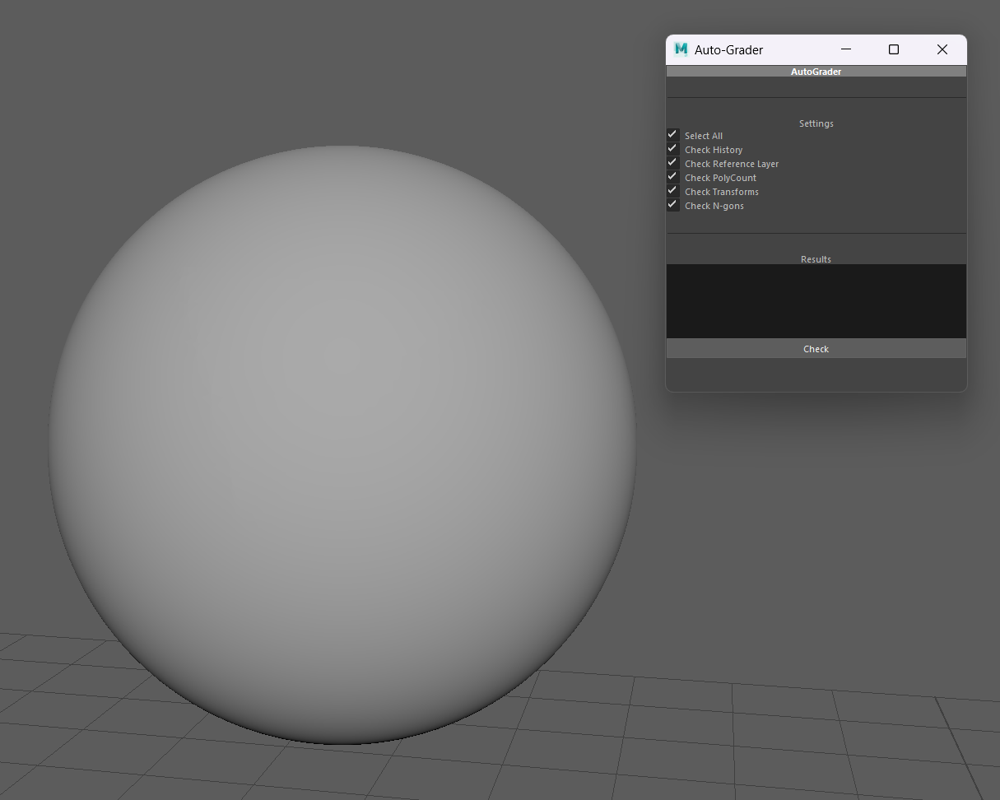
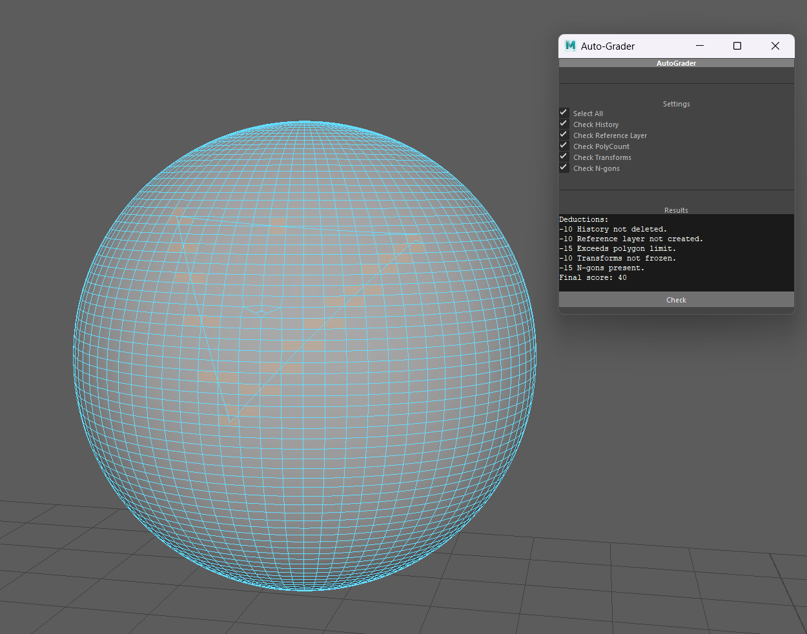
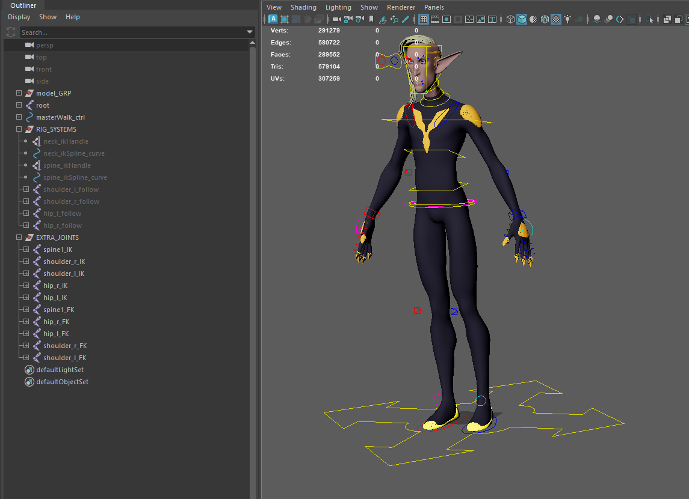
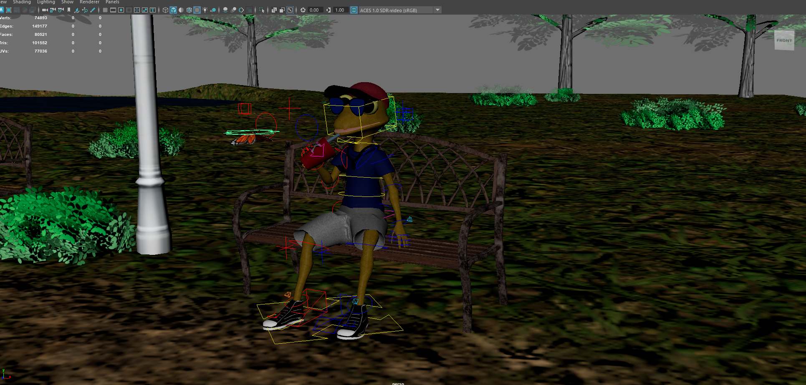

Moonrise
Moonrise is a 3D puzzle platformer developed by some fellow Abertay University students and me. Moonrise was created with Unreal Engine 5. My main role was that of Technical Animator; I was in charge of anything related to the animations. These were my main contributions to the game:
Play it here: pablo-poblette.itch.io/moonrise
Animation Pipeline: Lead motion capture session, clean animations, export/import, retarget, implement
Characters: Rigging for all characters and props, modeling for blobs, animation blueprints, custom animations
CFX: Sync animations with VFX, hair and cloth physics simulation
The Desert Lives On
The Desert Lives On is a cinematic that I created using Houdini, Maya, Substance Painter, and Unreal Engine for my Procedural Methods for VFX and CG class. These are the main components of the project:
Crowd Simulation: Houdini crowd simulation using agents and obstacle avoidance.
Characters: Rigging for all characters and props, modeling for blobs, animation blueprints, custom animations
Procedural Sand Dunes: These were created in Houdini using a Heightfield and textured using Substance Painter
Unreal Render: Scene assembly and render created using Unreal Engine. The crowd was exported using Alembic geometry cache from Houdini. The sand dunes were exported with ROP.
Shoot Fan MV
This was my main project for my first semester of my master's at Abertay. I
had
the idea of creating a music video the recently released song by Chaeyoung from Twice called
Shoot
(Firecracker). The song touched themes of exploring your mind and imagination. I think this
paired
up well with a stylized and surreal art style. This project is not finshed but this is what I
submitted for the classes. The three main components of this project were:
Motion Capture Pipeline: Capturing footage with Shogun Live, exporting it with
Shogun
Post,
editing and cleaning it with Autodesk Maya, and finally retargeting in Unreal Engine
Unreal Tool: This tool was used to manipulate the animations to make them appear
as if
they
were animated in two's, three's, etc. all the way to ten's.
Shaders Project: I implemented a toon post process shader with the shaders system
in
Unreal
using HLSL to unify the art style.
Watch the WIP on YouTube: https://youtu.be/_RjrlljWaus?si=EQRxOcnCXoM6vZdK
MayaAutoGrader
While in college I was a teaching assistant and often had to grade hundreds of assignments and also have time to help students in their assignments. I always thought if I could slightly speed up my grading I could have more time to explain to students different concepts more thouroughly. I created this script that would have helped me grade assignments quicker. It does some simple asset validation checks and then diaplays a "score" with deductions. This was written all in MEL. I am trying to adjust it in order to give it more use to the general public. Here is the github repo in case you would like to try it out: https://github.com/nineteenfrog/MayaAutoGrader


Fiverr Orders
Before my internship with Garmin I worked as a Freelancer on Fiverr for a bit of time. During this time I worked on two main projects. One was the most complex rig I had ever done with a reverse foot system, twist joints for arms and legs, and also facial controls. The other consisted of creating a character from a concept image. I adjusted the concept art, 3D modeled the character, textured, and rigged it. I also had to rig and model other props in the scene and create the environment within maya. I also directed the scenes and did the lighting. Both of these projects were really fun to work on.

